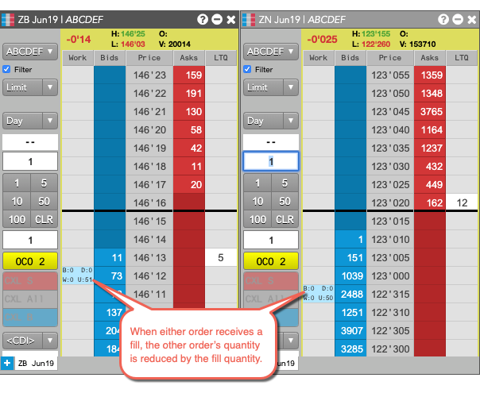
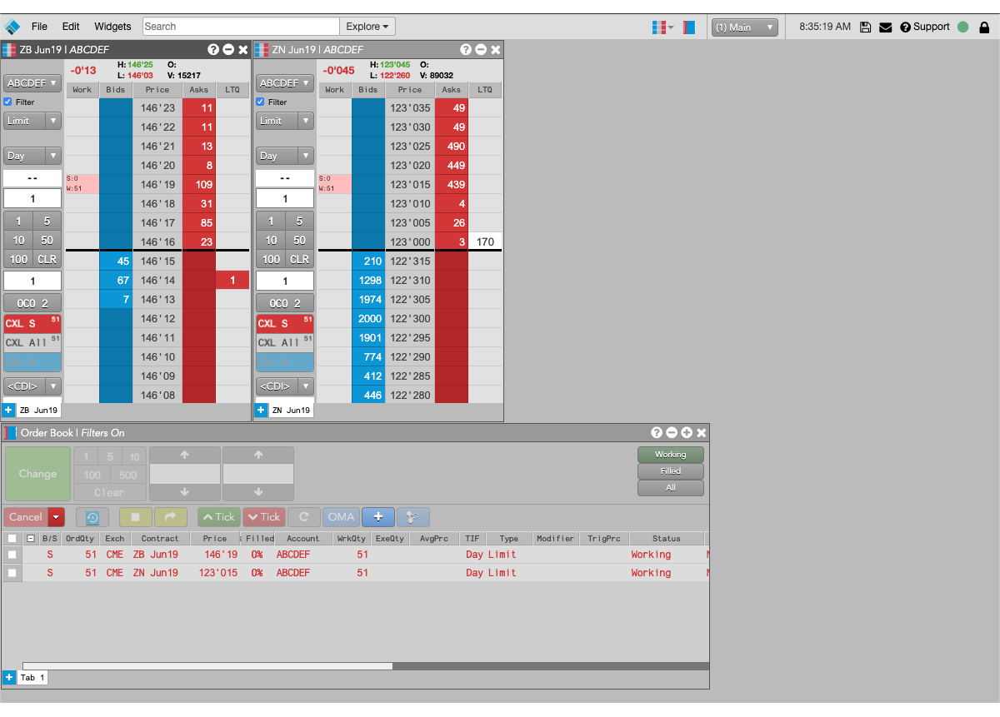
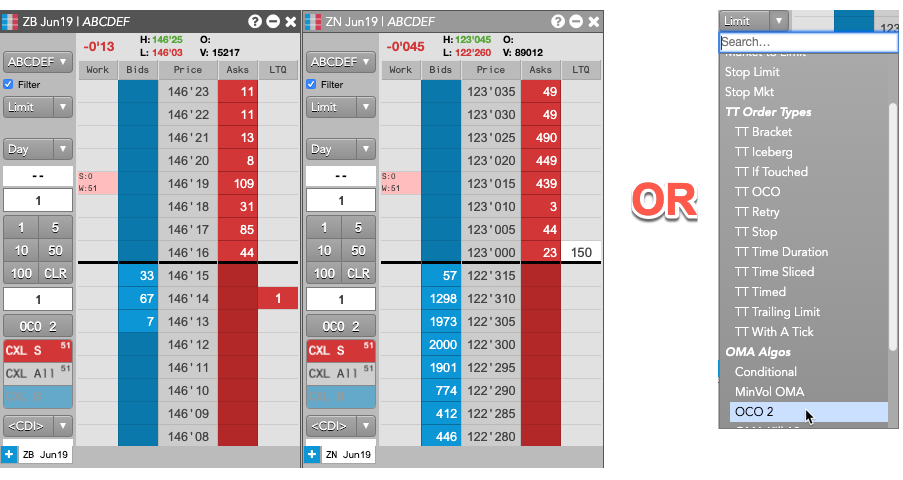
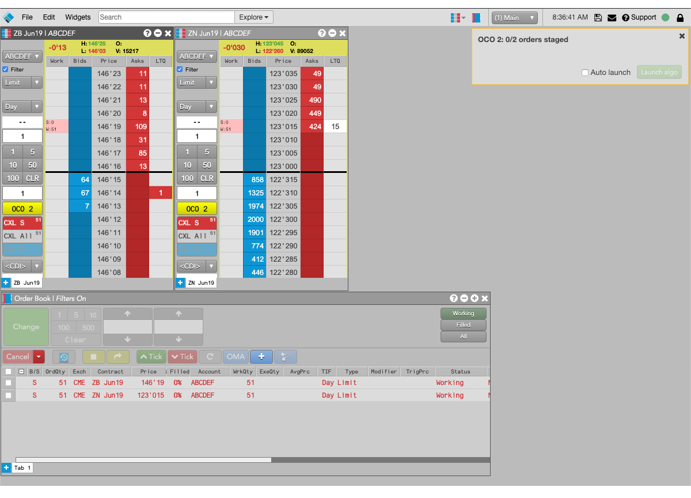
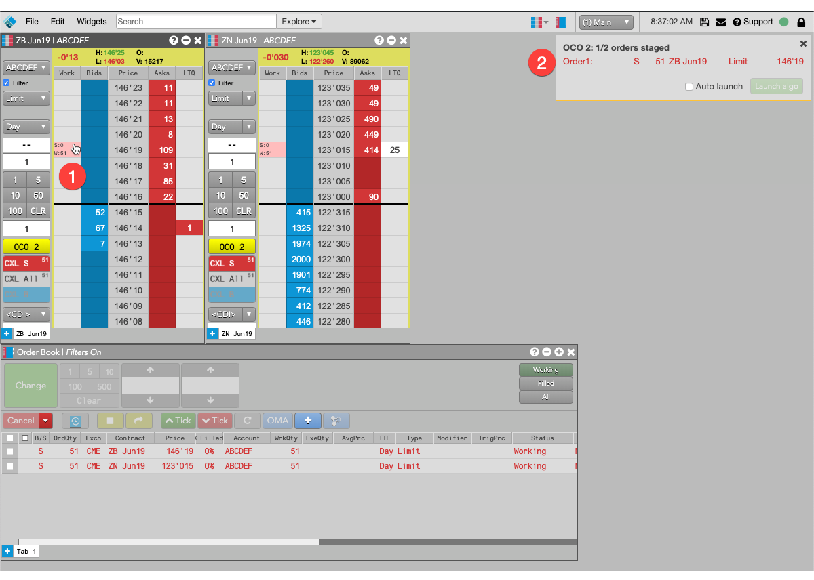
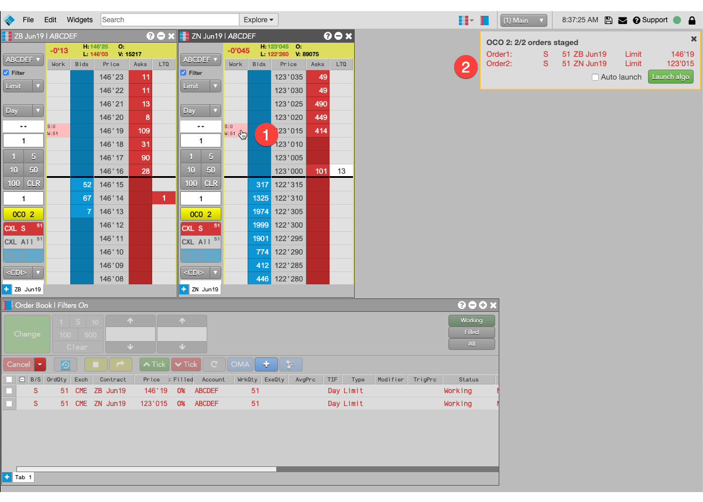
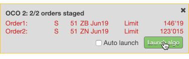
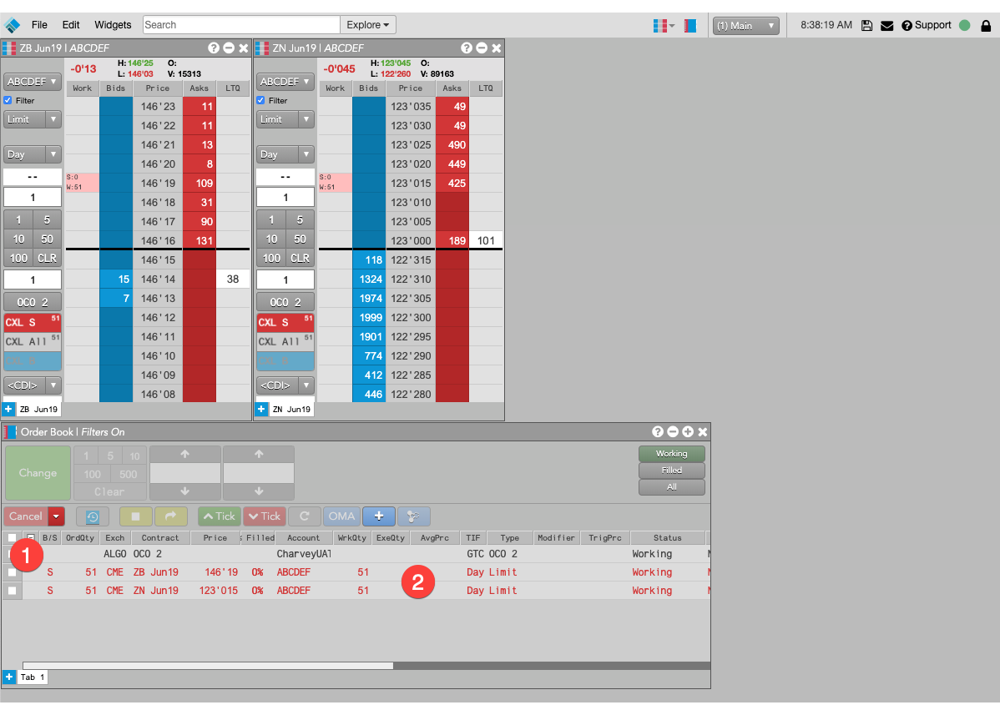
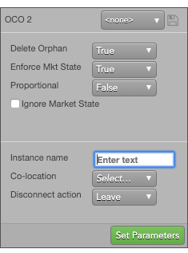

The OCO 2 OMA lets you select two orders and apply an OCO (one-cancels-other) OMA to them. When one order is fully-filled, the other order is canceled. Also, when partial fills are received for one order, the quantity of the other order is reduced accordingly.
The OCO 2 OMA also supports an "order building" mode that lets you dynamically build an OMA from existing or new orders in MD Trader. You can then select existing orders or create new orders to be managed by the OMA. New orders are added to MD Trader in a held state so they don't start working until the OMA is launched.

{% comment %}
{% endcomment %}
Limitations for adopting orders
The OCO 2 OMA can adopt exchange orders, TT Order Types, Synthetic Order Algos (SOAs) created in ADL and child orders of other algos. It cannot, however, adopt:
-
TT Order Type parent orders
-
Autospreader® parent orders
-
Aggregator parent orders
-
OTC orders
{% comment %}
{% endcomment %}
Launching the OCO 2 OMA in builder mode
In this procedure, you launch the OCO 2 OMA and adopt two existing Sell orders, one each for different contracts. For each fill in one order, the algo reduces the quantity of the other order by the same amount.

To launch the OCO 2 OMA in builder mode:
-
In MD Trader, click the custom action button you added for the OCO 2 OMA or select OCO 2 from the Order Type drop-down.

{% comment %}
{% endcomment %}
The background color of the button and all MD Trader Header panels changes to yellow to indicate your are now in order builder mode, and the OMA order builder opens for the associated OMA algo.

-
Either use shift-right-click to select an existing order or enter a new order in an MD Trader widget.
The selected or new order is added to order builder.

-
Shift-right-click the working order to add it to the algo order.
-
The selected order appears in the order builder.
-
Either use shift-right-click to select an existing order or enter a new order in an MD Trader widget.

-
Shift-right-click to select the second order.
-
The selected order is added to the order builder.
-
In the order builder, click Launch algo.

You can also enable Auto-launch to launch the algo automatically when the algo's required number of orders is added.
The new algo parent order, along with its child orders, are added to the Order Book.

-
OCO 2 OMA parent order.
-
Child orders being managed by the OCO 2 OMA.
{% comment %}
{% endcomment %}
Canceling OCO 2 parent orders
If you cancel the parent order of an OCO 2 parent order, the parent order is deleted and:
-
Child orders added from existing orders will remain working in market.
-
Child orders added as new orders will be deleted.
OCO 2 OMA parameters

The OCO 2 public OMA uses the following parameters:
-
Delete orphan: Whether to delete the balance of a larger order when an order with a smaller quantity is fully-filled.
If, at any time, the working quantity of any one of the OCO OMA child orders goes to zero, the other orders are considered to be "orphans." When this parameter is TRUE, all remaining orders are deleted, regardless of their working quantities.
-
Enforce Mkt State: Whether to delete the OCO order, and its child orders, if the market state of one of the child instruments changes to a non-tradable state.
If the market state of an instrument changes to something other than Open, and Enforce Mkt State is enabled, all orders will be deleted.
-
Proportional: Method to use when reducing the quantities of other legs when one leg is filled.
- True: Reduce the other leg quantities by the same proportion of the fill quantity to the order quantity of the filled order.
- False: (Default) Reduce the other leg quantities by the fill quantity of the filled order.
For example, suppose you create an OCO OMA algo for a 100-lot order and two 50-lot orders and that the 100-lot order receives a fill for 20 lots (20%). If the Proportional parameter is True, the quantities of the remaining two 50-lot leg orders will also be reduced by 20%, or 10 lots each. If the parameter is false, the quantities of each of the other orders will be reduced by 20 contracts.
-
Ignore Market State: Whether to ignore the market state when submitting the parent OCO OMA.
-
Instance name: Optional name for this algo instance.
-
Co-location: Location of the Algo Server to run this algo.
The Co-location drop down is seeded based on the market of the default instrument in the selected algo. It will also seed when multiple instruments are defined if all instruments are from the same market.
-
Disconnect action: Action to take if the client loses its connection to TT:
- Leave to allow the algo to continue running normally.
- Pause to suspend the algo until you manually restart it.
- Cancel to delete the algo.
Note: You can set the default Disconnect action in the Preferences